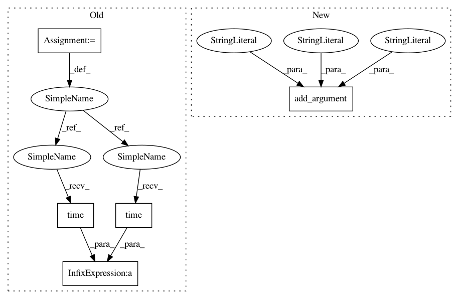

f6415170f7f90124e9cdb9ccd37cd867852b7657,train.py,,,#,19
Before Change
os.makedirs(args.save_path, exist_ok=True)
running_loss = 0.0
train_begin = time.time()
for epoch in range(1, model_args.num_epochs + 1):
for i, batch in enumerate(dataloader):
optimizer.zero_grad()
if args.gpuid >= 0:
for key in batch:
batch[key] = Variable(batch[key].cuda())
enc_out = encoder(batch["img_feat"], batch["ques_fwd"], batch["hist"])
dec_out = decoder(enc_out, batch["opt"])
cur_loss = criterion(dec_out, batch["ans_ind"].view(-1))
cur_loss.backward()
optimizer.step()
gc.collect()
// --------------------------------------------------------------------
// update running loss and decay learning rates
// --------------------------------------------------------------------
if running_loss > 0.0:
running_loss = 0.95 * running_loss + 0.05 * cur_loss.data[0]
else:
running_loss = cur_loss.data[0]
if optimizer.param_groups[0]["lr"] > args.min_lr:
scheduler.step()
// --------------------------------------------------------------------
// print after ever few iterations
// --------------------------------------------------------------------
if i % 100 == 0:
// print current time, running average, learning rate, iteration, epoch
print("[{}][Epoch: {:3d}][Iter: {:6d}][Loss: {:6f}][lr: {:7f}]".format(
datetime.timedelta(int(time.time() - train_begin)), epoch,
epoch * args.iter_per_epoch + i, running_loss,
optimizer.param_groups[0]["lr"]))
After Change
parser.add_argument("-min_lr", default=5e-5, type=float, help="Minimum learning rate")
parser.add_argument("-weight_init", default="xavier", choices=["xavier", "kaiming"],
help="Weight initialization strategy")
parser.add_argument("-overfit", action="store_true",
help="Overfit on 5 examples, meant for debugging")
parser.add_argument("-gpuid", default=0, type=int, help="GPU id to use")
parser.add_argument_group("Checkpointing related arguments")
parser.add_argument("-load_path", default="", help="Checkpoint to load path from")
In pattern: SUPERPATTERN
Frequency: 3
Non-data size: 5
Instances
Project Name: batra-mlp-lab/visdial-challenge-starter-pytorch
Commit Name: f6415170f7f90124e9cdb9ccd37cd867852b7657
Time: 2018-07-08
Author: karandesai281196@gmail.com
File Name: train.py
Class Name:
Method Name:
Project Name: batra-mlp-lab/visdial-challenge-starter-pytorch
Commit Name: 42fc102b56aadde323fa695d35e109c5bfb13e7c
Time: 2018-07-08
Author: karandesai281196@gmail.com
File Name: train.py
Class Name:
Method Name:
Project Name: SeanNaren/deepspeech.pytorch
Commit Name: ca27a9b77e569c8c990e890acb6f8f540d2d99c4
Time: 2017-10-27
Author: seannaren@hotmail.com
File Name: transcribe.py
Class Name:
Method Name:
Project Name: batra-mlp-lab/visdial-challenge-starter-pytorch
Commit Name: f6415170f7f90124e9cdb9ccd37cd867852b7657
Time: 2018-07-08
Author: karandesai281196@gmail.com
File Name: train.py
Class Name:
Method Name: